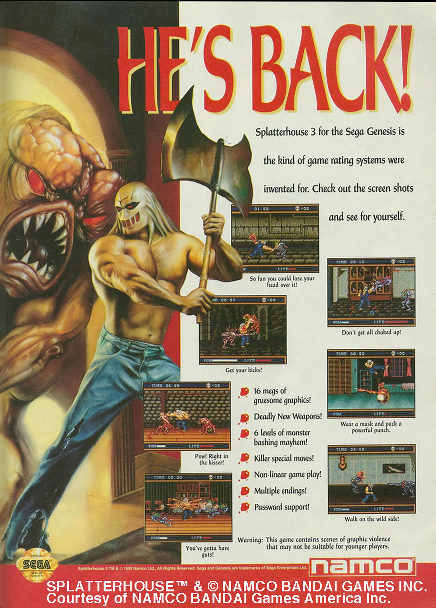

Pong, the electronic table-tennis simulation game, was the first video game for many people who grew up in the 1970s and is now a famous symbol of early video games. However, the precursors to modern video games were created as early as the 1950s. In 1952 a computer simulation of tic-tac-toe was developed for EDSAC, one of the first stored-information computers, and in 1958 a game called Tennis for Two was developed at Brookhaven National Laboratory as a way to entertain people coming through the laboratory on tours.Simon Egenfeldt-Nielsen, Understanding Video Games: The Essential Introduction (New York: Taylor & Francis, 2008), 50.
Figure 10.2
Tennis for Two was a rudimentary game designed to entertain visitors to the Brookhaven National Laboratory.
These games would generate little interest among the modern game-playing public, but at the time they enthralled their users and introduced the basic elements of the cultural video game experience. In a time before personal computers, these games allowed the general public to access technology that had been restricted to the realm of abstract science. Tennis for Two created an interface where anyone with basic motor skills could use a complex machine. The first video games functioned early on as a form of media by essentially disseminating the experience of computer technology to those who did not have access to it.
As video games evolved, their role as a form of media grew as well. Video games have grown from simple tools that made computing technology understandable to forms of media that can communicate cultural values and human relationships.
The 1970s saw the rise of video games as a cultural phenomenon. A 1972 article in Rolling Stone describes the early days of computer gaming:
Reliably, at any nighttime moment (i.e. non-business hours) in North America hundreds of computer technicians are effectively out of their bodies, locked in life-or-death space combat computer-projected onto cathode ray tube display screens, for hours at a time, ruining their eyes, numbing their fingers in frenzied mashing of control buttons, joyously slaying their friend and wasting their employers’ valuable computer time. Something basic is going on.Stewart Brand, “Space War,” Rolling Stone, December 7, 1972.
This scene was describing Spacewar!, a game developed in the 1960s at the Massachusetts Institute of Technology (MIT) that spread to other college campuses and computing centers. In the early 1970s, very few people owned computers. Most computer users worked or studied at university, business, or government facilities. Those with access to computers were quick to utilize them for gaming purposes.
The first coin-operated arcade gameA coin-operated video game placed in public establishments. was modeled on Spacewar! It was called Computer Space, and it fared poorly among the general public because of its difficult controls. In 1972, Pong, the table-tennis simulator that has come to symbolize early computer games, was created by the fledgling company AtariThe video game company that was responsible for the arcade game Pong and that led the home console market in the 1970s and 1980s., and it was immediately successful. Pong was initially placed in bars with pinball machines and other games of chance, but as video games grew in popularity, they were placed in any establishment that would take them. By the end of the 1970s, so many video arcades were being built that some towns passed zoning laws limiting them.Steven Kent, “Super Mario Nation,” American Heritage, September 1997, http://www.americanheritage.com/articles/magazine/ah/1997/5/1997_5_65.shtml.
The end of the 1970s ushered in a new era—what some call the golden age of video games—with the game Space Invaders, an international phenomenon that exceded all expectations. In Japan, the game was so popular that it caused a national coin shortage. Games like Space Invaders illustrate both the effect of arcade games and their influence on international culture. In two different countries on opposite sides of the globe, Japanese and American teenagers, although they could not speak to one another, were having the same experiences thanks to a video game.
The first video game consoleA video game system designed to be attached to a television to simulate arcade video games. for the home began selling in 1972. It was the Magnavox Odyssey, and it was based on prototypes built by Ralph Behr in the late 1960s. This system included a Pong-type game, and when the arcade version of Pong became popular, the Odyssey began to sell well. Atari, which was making arcade games at the time, decided to produce a home version of Pong and released it in 1974. Although this system could only play one game, its graphics and controls were superior to the Odyssey, and it was sold through a major department store, Sears. Because of these advantages, the Atari home version of Pong sold well, and a host of other companies began producing and selling their own versions of Pong.Leonard Herman, “Early Home Video Game Systems,” in The Video Game Explosion: From Pong to PlayStation and Beyond, ed. Mark Wolf (Westport, CT: Greenwood Press, 2008), 54.
A major step forward in the evolution of video games was the development of game cartridgesInterchangeable cartridges containing video games for use in home consoles. that stored the games and could be interchanged in the console. With this technology, users were no longer limited to a set number of games, leading many video game console makers to switch their emphasis to producing games. Several groups, such as Magnavox, Coleco, and Fairchild, released versions of cartridge-type consoles, but Atari’s 2600 console had the upper hand because of the company’s work on arcade games. Atari capitalized off of its arcade successes by releasing games that were well known to a public that was frequenting arcades. The popularity of games such as Space Invaders and Pac-Man made the Atari 2600 a successful system. The late 1970s also saw the birth of companies such as Activision, which developed third-party games for the Atari 2600.Mark J. P. Wolf, “Arcade Games of the 1970s,” in The Video Game Explosion (see note 7), 41.
The birth of the home computer market in the 1970s paralleled the emergence of video game consoles. The first computer designed and sold for the home consumer was the Altair. It was first sold in 1975, several years after video game consoles had been selling, and it sold mainly to a hobbyist market. During this period, people such as Steve Jobs, the founder of Apple, were building computers by hand and selling them to get their start-up businesses going. In 1977, three important computers—Radio Shack’s TRS-80, the Commodore PET, and the Apple II—were produced and began selling to the home market.Jeremy Reimer, “Total share: 30 years of personal computer market share figures,” Ars Technica (blog), December 14, 2005, http://arstechnica.com/old/content/2005/12/total-share.ars/2.
The rise of personal computers allowed for the development of more complex games. Designers of games such as Mystery House, developed in 1979 for the Apple II, and Rogue, developed in 1980 and played on IBM PCs, used the processing power of early home computers to develop video games that had extended plots and story lines. In these games, players moved through landscapes composed of basic graphics, solving problems and working through an involved narrative. The development of video games for the personal computer platform expanded the ability of video games to act as media by allowing complex stories to be told and new forms of interaction to take place between players.
Atari’s success in the home console market was due in large part to its ownership of already-popular arcade games and the large number of game cartridges available for the system. These strengths, however, eventually proved detrimental to the company and led to what is now known as the video game crash of 1983The economic failure of the video game industry in 1983, caused by an oversupply of games and waning demand.. Atari bet heavily on its past successes with popular arcade games by releasing Pac-Man for the Atari 2600. Pac-Man was a successful arcade game that did not translate well to the home console, leading to disappointed consumers and lower-than-expected sales. Additionally, Atari produced 10 million of the lackluster Pac-Man games on its first run, despite the fact that active consoles were only estimated at 10 million. Similar mistakes were made with a game based on the movie E.T.: The Extra-Terrestrial, which has gained notoriety as one of the worst games in Atari’s history. It was not received well by consumers despite the success of the movie, and Atari had again bet heavily on its success. Piles of unsold E.T. game cartridges were reportedly buried in the New Mexico desert under a veil of secrecy.Nick Montfort and Ian Bogost, Racing the Beam: The Atari Video Computer System (Cambridge, MA: MIT Press, 2009), 127.
As retail outlets became increasingly wary of home console failures, they began stocking fewer games on shelves. This action, combined with an increasing number of companies producing games, led to overproduction and a resulting fallout in the video game market in 1983. Many smaller game developers did not have the capacity to withstand this downturn and went out of business. Although Coleco and Atari were able to make it through the crash, neither company regained its former share of the video game market. It was 1985 when the video game market picked up again.Steven Kent, “Super Mario Nation,” American Heritage, September 1997, http://www.americanheritage.com/articles/magazine/ah/1997/5/1997_5_65.shtml.
Nintendo, a Japanese card and novelty producer that had begun to produce electronic games in the 1970s, was responsible for arcade games such as Donkey Kong in the early 1980s. Its first home console, developed in 1984 for sale in Japan, tried to succeed where Atari had failed. The Nintendo system used newer, better microchips, bought in large quantities, to ensure high-quality graphics at a price consumers could afford. Keeping console prices low meant Nintendo had to rely on games for most of its profits and maintain control of game production. This was something Atari had failed to do, and it led to a glut of low-priced games that caused the crash of 1983. Nintendo got around this problem with proprietary circuits that would not allow unlicensed games to be played on the console. This allowed Nintendo to dominate the home video game market through the end of the decade, when one-third of homes in the United States had a Nintendo system.Gary Cross and Gregory Smits, “Japan, the U.S. and the Globalization of Children’s Consumer Culture,” Journal of Social History 38, no. 4 (2005).
Nintendo introduced its Nintendo Entertainment System (NES) in the United States in 1985. The game Super Mario Brothers, released with the system, was also a landmark in video game development. The game employed a narrative in the same manner as more complicated computer games, but its controls were accessible and its objectives simple. The game appealed to a younger demographic, generally boys in the 8–14 range, than the one targeted by Atari.Stephen Kline, Nick Dyer-Witheford, and Greig De Peuter, Digital Play: The Interaction of Technology, Culture, and Marketing (Montreal: McGill-Queen’s University Press, 2003), 119. Its designer, Shigeru Miyamoto, tried to mimic the experiences of childhood adventures, creating a fantasy world not based on previous models of science fiction or other literary genres.Rus McLaughlin, “IGN Presents the History of Super Mario Bros.,” IGN Retro, November 8, 2007, http://games.ign.com/articles/833/833615p1.html. Super Mario Brothers also gave Nintendo an iconic character who has been used in numerous other games, television shows, and even a movie. The development of this type of character and fantasy world became the norm for video game makers. Games such as The Legend of Zelda became franchises with film and television possibilities rather than simply one-off games.
As video games developed as a form of media, the public struggled to come to grips with the kind of messages this medium was passing on to children. These were no longer simple games of reflex that could be compared to similar non-video games or sports; these were forms of media that included stories and messages that concerned parents and children’s advocates. Arguments about the larger meaning of the games became common, with some seeing the games as driven by ideas of conquest and gender stereotypes, whereas others saw basic stories about traveling and exploration.Mary Fuller and Henry Jenkins, “Nintendo and New World Travel Writing: A Dialogue,” Cybersociety: Computer-Mediated Communication and Community, ed. Steven G. Jones (Thousand Oaks, CA: Sage Publications, 1995), 57–72.
Other software companies were still interested in the home console market in the mid-1980s. Atari released the 2600jr and the 7800 in 1986 after Nintendo’s success, but the consoles could not compete with Nintendo. The Sega Corporation, which had been involved with arcade video game production, released its Sega Master System in 1986. Although the system had more graphics possibilities than the NES, Sega failed to make a dent in Nintendo’s market share until the early 1990s, with the release of Sega Genesis.Aphra Kerr, “Spilling Hot Coffee? Grand Theft Auto as Contested Cultural Product,” in The Meaning and Culture of Grand Theft Auto: Critical Essays, ed. Nate Garrelts (Jefferson, NC: McFarland, 2005), 17.
The enormous number of games available for Atari consoles in the early 1980s took its toll on video arcades. In 1983, arcade revenues had fallen to a 3-year low, leading game makers to turn to newer technologies that could not be replicated by home consoles. This included arcade games powered by laser discs, such as Dragon’s Lair and Space Ace, but their novelty soon wore off, and laser-disc games became museum pieces.Aljean Harmetz, “Video Arcades Turn to Laser Technology as Queues Dwindle,” Morning Herald (Sydney), February 2, 1984. In 1989, museums were already putting on exhibitions of early arcade games that included ones from the early 1980s. Although newer games continued to come out on arcade platforms, they could not compete with the home console market and never achieved their previous successes from the early 1980s. Increasingly, arcade gamers chose to stay at home to play games on computers and consoles. Today, dedicated arcades are a dying breed. Most that remain, like the Dave & Buster’s and Chuck E. Cheese’s chains, offer full-service restaurants and other entertainment attractions to draw in business.
Home games fared better than arcades because they could ride the wave of personal computer purchases that occurred in the 1980s. Some important developments in video games occurred in the mid-1980s with the development of online games. Multiuser dungeons, or MUDs, were role-playing games played online by multiple users at once. The games were generally text-based, describing the world of the MUD through text rather than illustrating it through graphics. The games allowed users to create a character and move through different worlds, accomplishing goals that awarded them with new skills. If characters attained a certain level of proficiency, they could then design their own area of the world. Habitat, a game developed in 1986 for the Commodore 64, was a graphic version of this type of game. Users dialed up on modems to a central host server and then controlled characters on screen, interacting with other users. Jeremy Reimer, “The Evolution of Gaming: Computers, Consoles, and Arcade,” Ars Technica (blog), October 10, 2005, http://arstechnica.com/old/content/2005/10/gaming-evolution.ars/4.
During the mid-1980s, a demographic shift occurred. Between 1985 and 1987, games designed to run on business computers rose from 15 percent to 40 percent of games sold.Philip Elmer-Dewitt and others, “Computers: Games that Grownups Play,” Time, July 27, 1987, http://www.time.com/time/magazine/article/0,9171,965090,00.html. This trend meant that game makers could use the increased processing power of business computers to create more complex games. It also meant adults were interested in computer games and could become a profitable market.
Video games evolved at a rapid rate throughout the 1990s, moving from the first 16-bit systems (named for the amount of data they could process and store) in the early ’90s to the first Internet-enabled home console in 1999. As companies focused on new marketing strategies, wider audiences were targeted, and video games’ influence on culture began to be felt.
Nintendo’s dominance of the home console market throughout the late 1980s allowed it to build a large library of games for use on the NES. This also proved to be a weakness, however, because Nintendo was reluctant to improve or change its system for fear of making its game library obsolete. Technology had changed in the years since the introduction of the NES, and companies such as NEC and Sega were ready to challenge Nintendo with 16-bit systems.Andy Slaven, Video Game Bible, 1985–2002, (Victoria, BC: Trafford), 70–71.
Figure 10.3
Sega’s commercials suggested that it was a more violent version of Nintendo.
The Sega Master System had failed to challenge the NES, but with the release of its 16-bit system, Sega Genesis, the company pursued a new marketing strategy. Whereas Nintendo targeted 8- to 14-year-olds, Sega’s marketing plan targeted 15- to 17-year olds, making games that were more mature and advertising during programs such as the MTV Video Music Awards. The campaign successfully branded Sega as a cooler version of Nintendo and moved mainstream video games into a more mature arena. Nintendo responded to the Sega Genesis with its own 16-bit system, the Super NES, and began creating more mature games as well. Games such as Sega’s Mortal Kombat and Nintendo’s Street Fighter competed to raise the level of violence possible in a video game. Sega’s advertisements even suggested that its game was better because of its more violent possibilities.Gamespot, “When Two Tribes Go to War: A History of Video Game Controversy,” http://www.gamespot.com/features/6090892/p-5.html.
By 1994, companies such as 3DO, with its 32-bit system, and Atari, with its allegedly 64-bit Jaguar, attempted to get in on the home console market but failed to use effective marketing strategies to back up their products. Both systems fell out of production before the end of the decade. Sega, fearing that its system would become obsolete, released the 32-bit Saturn system in 1995. The system was rushed into production and did not have enough games available to ensure its success.CyberiaPC.com, “Sega Saturn (History, Specs, Pictures),” http://www.cyberiapc.com/vgg/sega_saturn.htm. Sony stepped in with its PlayStation console at a time when Sega’s Saturn was floundering and before Nintendo’s 64-bit system had been released. This system targeted an even older demographic of 14- to 24-year-olds and made a large effect on the market; by March of 2007, Sony had sold 102 million PlayStations.Edge staff, “The Making Of: Playstation,” Edge, April 24, 2009, http://www.next-gen.biz/features/the-making-of-playstation.
Computer games had avid players, but they were still a niche market in the early 1990s. An important step in the mainstream acceptance of personal computer games was the development of the first-person shooterA video game genre developed in the 1990s that puts the player in the perspective of a character who primarily uses guns to defeat enemies. genre. First popularized by the 1992 game Wolfenstein 3D, these games put the player in the character’s perspective, making it seem as if the player were firing weapons and being attacked. Doom, released in 1993, and Quake, released in 1996, used the increased processing power of personal computers to create vivid three-dimensional worlds that were impossible to fully replicate on video game consoles of the era. These games pushed realism to new heights and began attracting public attention for their graphic violence.
Figure 10.4
Myst challenged the notion that only violent games could be successful.
Another trend was reaching out to audiences outside of the video-game-playing community. Myst, an adventure game where the player walked around an island solving a mystery, drove sales of CD-ROM drives for computers. Myst, its sequel Riven, and other nonviolent games such as SimCity actually outsold Doom and Quake in the 1990s.Stephen C. Miller, “News Watch; Most-Violent Video Games Are Not Biggest Sellers,” New York Times, July 29, 1999, http://www.nytimes.com/1999/07/29/technology/news-watch-most-violent-video-games-are-not-biggest-sellers.html. These nonviolent games appealed to people who did not generally play video games, increasing the form’s audience and expanding the types of information that video games put across.
A major advance in game technology came with the increase in Internet use by the general public in the 1990s. A major feature of Doom was the ability to use multiplayer gaming through the Internet. Strategy games such as Command and Conquer and Total Annihilation also included options where players could play each other over the Internet. Other fantasy-inspired role-playing games, such as Ultima Online, used the Internet to initiate the massively multiplayer online role-playing game (MMORPG)A genre of video games that allows a large number of players to simultaneously engage in a role-playing game. genre.Jeremy Reimer, “The Evolution of Gaming: Computers, Consoles, and Arcade,” Ars Technica (blog), October 10, 2005, http://arstechnica.com/old/content/2005/10/gaming-evolution.ars/4. These games used the Internet as their platform, much like the text-based MUDs, creating a space where individuals could play the game while socially interacting with one another.
The development of portable game systems was another important aspect of video games during the 1990s. Handheld games had been in use since the 1970s, and a system with interchangeable cartridges had even been sold in the early 1980s. Nintendo released the Game Boy in 1989, using the same principles that made the NES dominate the handheld market throughout the 1990s. The Game Boy was released with the game Tetris, using the game’s popularity to drive purchases of the unit. The unit’s simple design meant users could get 20 hours of playing time on a set of batteries, and this basic design was left essentially unaltered for most of the decade. More advanced handheld systems, such as the Atari Lynx and Sega Game Gear, could not compete with the Game Boy despite their superior graphics and color displays. Joe Hutsko, “88 Million and Counting; Nintendo Remains King of the Handheld Game Players,” New York Times, March 25, 2000, http://www.nytimes.com/2000/03/25/business/88-million-and-counting-nintendo-remains-king-of-the-handheld-game-players.html.
The decade-long success of the Game Boy belies the conventional wisdom of the console wars that more advanced technology makes for a more popular system. The Game Boy’s static, simple design was readily accessible, and its stability allowed for a large library of games to be developed for it. Despite using technology almost a decade old, the Game Boy accounted for 30 percent of Nintendo of America’s overall revenues at the end of the 1990s. Joe Hutsko, “88 Million and Counting; Nintendo Remains King of the Handheld Game Players,” New York Times, March 25, 2000, http://www.nytimes.com/2000/03/25/business/88-million-and-counting-nintendo-remains-king-of-the-handheld-game-players.html.
1999 saw Sega’s last effort in the console wars with its Sega Dreamcast. This console could connect to the Internet, emulating the sophisticated computer games of the 1990s. The new features of the Sega Dreamcast were not enough to save the brand, however, and Sega discontinued production in 2001, leaving the console market entirely.“Sega Dreamcast,” slide in “A Brief History of Game Console Warfare,” Business Week, http://images.businessweek.com/ss/06/10/game_consoles/.
A major problem for Sega’s Dreamcast was Sony’s release of the PlayStation 2 (PS2) in 2000. The PS2 could function as a DVD player, expanding the role of the console into an entertainment device that did more than play video games. This console was incredibly successful, enjoying a long production run, with more than 106 million units sold worldwide by the end of the decade.“PlayStation 2,” slide in “A Brief History of Game Console Warfare.” Business Week, http://images.businessweek.com/ss/06/10/game_consoles/
In 2001, two major consoles were released to compete with the PS2: the Xbox and the Nintendo GameCube. The Xbox was an attempt by Microsoft to enter the market with a console that expanded on the functions of other game consoles. The unit had features similar to a PC, including a hard drive and an ethernet port for online play through its service, Xbox Live. The popularity of the first-person shooter game Halo, an Xbox exclusive release, boosted sales as well. Nintendo’s GameCube did not offer DVD playback capabilities, choosing instead to focus on gaming functions. Both of these consoles sold millions of units but did not come close to the sales of the PS2.
As consoles developed to rival the capabilities of personal computers, game developers began to focus more on games for consoles. From 2000 to the end of the decade, the popularity of personal computer games has gradually declined. The computer gaming community, while still significant, is focused on game players who are willing to pay a lot of money on personal computers that are designed specifically for gaming, often including multiple monitors and user modifications that allow personal computers to play newer games. This type of market, though profitable, is not large enough to compete with the audience for the much cheaper game consoles. Kristin Kalning, “Is PC Gaming Dying? Or Thriving?” MSNBC, March 26, 2008, http://www.msnbc.msn.com/id/23800152/wid/11915773/.
Nintendo continued its control of the handheld game market into the 2000s with the 2001 release of the Game Boy Advance, a redesigned Game Boy that offered 32-bit processing and compatibility with older Game Boy games. In 2004, anticipating Sony’s upcoming handheld console, Nintendo released the Nintendo DS, a handheld console that featured two screens and Wi-Fi capabilities for online gaming. Sony’s PlayStation Portable (PSP) was released the following year and featured Wi-Fi capabilities as well as a flexible platform that could be used to play other media such as MP3s.Penelope Patsuris, “Sony PSP vs. Nintendo DS,” Forbes, June 7, 2004, http://www.forbes.com/2004/06/07/cx_pp_0607mondaymatchup.html. These two consoles, along with their newer versions, continue to dominate the handheld market.
One interesting innovation in mobile gaming occurred in 2003 with the release of the Nokia N-Gage. The N-Gage was a combination of a game console and mobile phone that, according to consumers, did not fill either role very well. The product line was discontinued in 2005, but the idea of playing games on phones persisted and has been developed on other platforms.Brad Stone, “Play It Again, Nokia. For the Third Time,” New York Times, August 27, 2007, http://www.nytimes.com/2007/08/27/technology/27nokia.html. Apple currently dominates the industry of mobile phone games; in 2008 and 2009 alone, iPhone games generated $615 million in revenue.Peter Farago, “Apple iPhone and iPod Touch Capture U.S. Video Game Market Share,” Flurry (blog), March 22, 2010, http://blog.flurry.com/bid/31566/Apple-iPhone-and-iPod-touch-Capture-U-S-Video-Game-Market-Share. As mobile phone gaming grows in popularity and as the supporting technology becomes increasingly more advanced, traditional portable gaming platforms like the DS and the PSP will need to evolve to compete. Nintendo is already planning a successor to the DS that features 3-D graphics without the use of 3-D glasses that it hopes will help the company retain and grow its share of the portable gaming market.
The trends of the late 2000s have shown a steadily increasing market for video games. Newer control systems and family-oriented games have made it common for many families to engage in video game play as a group. Online games have continued to develop, gaining unprecedented numbers of players. The overall effect of these innovations has been the increasing acceptance of video game culture by the mainstream.
The current state of the home console market still involves the three major companies of the past 10 years: Nintendo, Sony, and Microsoft. The release of Microsoft’s Xbox 360 led this generation of consoles in 2005. The Xbox 360 featured expanded media capabilities and integrated access to Xbox Live, an online gaming service. Sony’s PlayStation 3 (PS3) was released in 2006. It also featured enhanced online access as well as expanded multimedia functions, with the additional capacity to play Blu-ray discs. Nintendo released the Wii at the same time. This console featured a motion-sensitive controller that departed from previous controllers and focused on accessible, often family-oriented games. This combination successfully brought in large numbers of new game players, including many older adults. By June 2010, in the United States, the Wii had sold 71.9 million units, the Xbox 360 had sold 40.3 million, and the PS3 trailed at 35.4 million.VGChartz, “Weekly Hardware Chart: 19th June 2010,” http://www.vgchartz.com. In the wake of the Wii’s success, Microsoft and Sony have introduced their own motion-sensitive systems.J. P. Mangalindan, “Is Casual Gaming Destroying the Traditional Gaming Market?” Fortune, March 18, 2010, http://tech.fortune.cnn.com/2010/03/18/is-casual-gaming-destroying-the-traditional-gaming-market/.
Video game marketing has changed to bring in more and more people to the video game audience. Think about the influence video games have had on you or people you know. If you have never played video games, then think about the ways your conceptions of video games have changed. Sketch out a timeline indicating the different occurrences that marked your experiences related to video games. Now compare this timeline to the history of video games from this section. Consider the following questions: